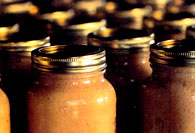

One summer several years back, I had such an abundance of homegrown tomatoes, cucumbers, peppers and herbs in my summer garden that I decided to make some salsa. I bought some canning books and supplies and was so surprised how easy and delicious it was that I began trying jams, jellies, pickles and curds.
That fall my 4-year-old, Laura, and I spent hours picking and squeezing lemons and oranges from all the neighbors' trees to make curd. The curd was so good that Laura even preferred a peanut butter-and-curd sandwich over anything else for her lunches. The kids at school loved her curd sandwiches so much their moms began asking for our recipe. I knew I was on to something.
About five summers ago, not having any idea what I was in for, I finally took the plunge and entered raspberry jam, lemon curd, garden salsa, dill pickles and tomatoes in the California State Fair. To my delight I won a blue ribbon for my jam and curd, a red ribbon for my salsa and a white ribbon for my pickles. I was hooked!
Now I've taken canning to a new level of experimentation. After seeing some of the unusual creations entered each year, I've enjoyed making up some of my own inventions that have become quite successful. Two years ago I won a blue ribbon for my raspberry mocha jelly, and the year before that I even went to a pumpkin farm the day after Halloween and brought home 50 pumpkins to make into pumpkin jelly. A little dash of pumpkin pie spice in my pumpkin jelly and I was on to another blue ribbon winner.
Every Christmas my friends and family now look forward to a gift basket filled with my award-winning samples. One year my husband even built special handcrafted redwood planter boxes that I filled with my wares for holiday gifts. They were a hit.
CARMEL MOONEY
Auburn, California
Carmel Mooney was one of three essay writers to be selected as judges in Grit and MOTHER EARTH NEWS' World Championship of Canning held last September. -MOTHER
|
 |
|
|